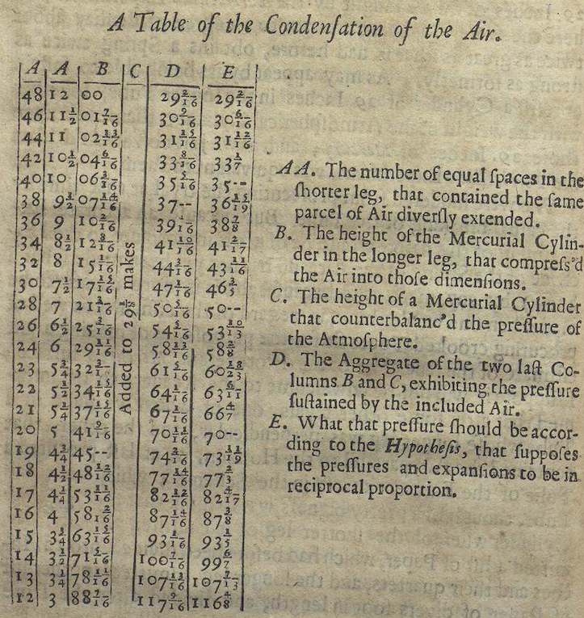
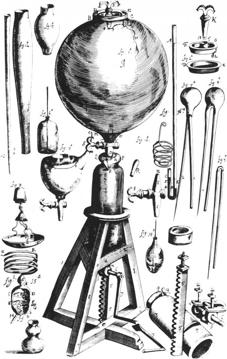
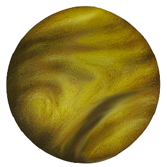

27 Hypothetical thinking
Many people presume that the logical process of drawing conclusions from data is inductive reasoning, unlike the deductive reasoning involved in mathematical proof. Inductive reasoning involves constructing general statements based on observed facts. A famous historical example involves Robert Boyle (1627-1691), whose name will be familiar to chemistry students.
Boyle’s law, from 1662, says that the pressure of a given amount of a gas is inversely proportional to its volume at a constant temperature.

We have access to Boyle’s lab notebooks and publications. Some of his experimental equipment is pictured in Figure 27.1. Here are the data from his 1662 treatise A Defence Of the Doctrine touching the Spring and Weight Of the Air.
Based on this data, Boyle formulated his law. Boyle’s Law still appears in textbooks, even though successive generations of scientists have tweaked it to be more precise (replace “amount” with “mass”) or to account for contrary observations (replace “gas” with “ideal gas.”)
Boyle is regarded as among the founders of modern scientific method, one description of which, arising in the mid-20th century, is called the hypothetico-deductive model. The process of the hypothetical-deductive model consists of formulating a hypothesis to describe the world, deducing consequences from these hypothesis, and carrying out experiments to look for those consequences. If the consequences are experimentally observed, the experiment corroborates the hypothesis. If not, the experiment refutes the hypothesis. In the progess of science, refuted hypotheses are replaced with alternatives that are compatible with the assembled experimental data. And the cycle of experiment, corroboration or refutation, and hypothesis generation begins again.
Notice that the word inductive does not appear in the name of the hypothetical-deductive model. That model does not attempt to explain where the refined hypotheses come from. If induction is the process of generating hypotheses from data, the hypothetical-deductive model does not involve induction.
Similarly, most statistical method is not about induction because it is not about generating hypotheses. All statistical quantities in these Lessons—coefficients, R2, effect sizes, and so on—are deduced from data. That’s why we can program a computer to calculate for us: creativity is not required.
The creative elements in statistical thinking are in the decisions about what systems to study, how to collect data from the system, and specification of models, e.g. time ~ distance * climb. Every set of such decisions is a hypothesis: “This approach will be helpful for my purposes.” If the purpose involves intervening in a system, the DAG methodology can guide in selecting covariates. If the purpose is prediction, other criteria for selecting covariates are appropriate.
This part of the Lessons is about how to choose among a set of hypotheses on the basis of data. I call this “hypothetical thinking” because it is not deductive. Neither is it inductive; the hypothetical thinking methods don’t necessarily point toward the formation of hypotheses. Rather, hypothetical thinking, in my formulation, is about the logic of evaluating hypotheses based on data.
The next two Lessons deal with closely related methods of hypothetical thinking. Lesson 28 covers Bayesian inference, a universally accepted and mathematically demonstrated approach to evaluating hypotheses which was introduced in the 1700s. However, starting about 1900 an important group of statistical pioneers rejected Bayesian methods, claiming that they were logically inadmissible for drawing completely objective conclusions from data. These statistical pioneers introduced new procedures for hypothetical reasoning called “Null hypothesis testing” (NHT), which we cover in Lesson 29.
NHT has been the dominant paradigm in applied statistics for many decades. It’s also widely accepted by statisticians that most people who use NHT do not understand it and often use it in ways that are invalid. You need to learn about NHT because it is dominant and in order to avoid its pitfalls. But you also need to learn about Bayes because it is indisputably the right approach in many contexts, particularly those that relate to decision-making. And, in my view, Bayes is a valuable perspective for learning what NHT is … and what it isn’t.
Where do hypotheses come from?
“Dans les champs de l’observation, le hasard ne favorise que les esprits préparés.” (“In the field of observation, chance favors only the prepared mind.”) - Louis Pasteur (1822-1895)
“Genius is one per cent inspiration, ninety-nine per cent perspiration.” - Thomas Edison (1847-1931)
It’s uncontroversial to say that hypotheses come from imagination, inspiration, creativity, dreaming, metaphor, and analogy. True though this may be, it’s helpful to have a more concrete model to draw on to describe the relationship between hypothesis and data.
Consider Robert Boyle and his hypothesis that gas pressure is inversely proportional to volume (at constant temperature). Boyle did not grow up in a vacuum. For instance, he would have been educated in geometry and familiar with the classic geometrical shapes: circle, ellipse, line, parabola, hyperbola, etc. In 1641, Boyle lived in Florence for a year, studying the work of the then-elderly Galileo. In The Assayer (1623), Galileo famously wrote: ““Philosophy is written in this grand book, the universe … It is written in the language of mathematics, and its characters are triangles, circles, and other geometric figures;….”
We can suppose that Boyle had these mathematical “characters” in mind when looking for a quantitative relationship in his data. Perhaps he went through the list of characters looking for a match with his observations. The hyperbola was the most likely and corresponds to the “inversely proportional” description in his Law.
The astronomer Johannes Kepler (1571-1660) similarly worked through a succession of possible geometrical models, matching them with data assembled by Tycho Brahe (1546-1601). An elliptical orbit was the best match. And Boyle’s lab assistant, Robert Hooke (1635-1703), would have had access to the same set of geometrical possibilities in framing his theory—called Hooke’s Law—that the relationship between the extension of a spring and the force exerted by the spring is one of direct proportionality. Hooke also proposed, before Isaac Newton, that the relationship between gravitational force and distance is an inverse-square proportion.
All of us have access to a repertoire or library of theoretical forms or patterns. This repertoire is bigger or smaller depending on our experience and education. For instance, in these Lessons you have seen a framework for randomness in the form of the various named noise models and their parameters. Another important framework in these Lessons is the scheme of regression modeling with its response variable and explanatory variables. Lesson 13.3 included a new pattern to add to your repertoire: interaction between variables.
The “interaction” pattern is the same as the “law of mass action” in chemistry.
Another important source for hypotheses is analogy. For instance, in the 1860s, James Clerk Maxwell (1831-1879) noted a close similarity between the mathematics of electricity and magnetism and the mathematics of propagation of waves in water or air. He offered the hypothesis that light is also a wave.
Hypotheses and deduction
Imagine your repertoire of patterns in book form: a listing of all the relationship patterns you have encountered in your life and education. Each of these patterns can be entertained hypothetically as an explanation of observations. The book provides a springboard to reasoning inductively from data to general pattern. You can work through the book systematically, assessing each possible pattern as a model for the data. The comparison can be done by intuition or calculation. For instance, you might graph the data and compare it against graphs of the various patterns.
Likelihood, introduced in Lesson 16 provides a particular form of calculation for comparison of hypothesis and data. Understanding likelihood involves comprehending several of the frameworks introduced earlier in these Lessons: considering data as a combination of signal and noise, modeling the signal using regression to find coefficients, various noise models and their parameters. The quantity used to do the comparison is likelihood: the relative probability of the data given the signal and noise models. To the extent that likelihood is high, the data corroborates the hypothesis.
This picture of inductive reasoning is based on the deduction (or calculation) of likelihood from a hypothesis and data. The mysterious part of induction—where does the hypothesis come from—has been reduced to a book of patterns. This idea of how we learn from data is consistent with a name often associated with the scientific method: the hypothetico-deductive model. The pattern book is the “hypothetico” part, likelihood is the deductive part.
Let’s look closer at the above statement: “To the extent that likelihood is high, the data corroborates the hypothesis.” When you encounter words like “high,” “big,” “small,” etc., an excellent mental habit is to ask, “Compared to what?” The number that results from a likelihood calculation does not come on a scale marked with the likelihood values of other successful or unsuccessful hypotheses. Instead, determining whether likelihood is high or low depends on comparing it to the likelihood calculated (on the same data) based on other hypotheses. Each individual hypothesis generates a likelihood number, judging whether that number is high or low depends on comparing the likelihoods for multiple hypotheses.
In the following two Lessons, we will mostly focus on the comparison between two hypotheses, but the methods can be generalized to work for any number of hypotheses. In Bayesian reasoning, one calculates the relative probability of each of the hypotheses under consideration. Proponents of Null hypothesis testing (NHT), usually called “frequentists,” consider just a single hypothesis: the eponymous Null. Naturally, this rules out any comparison of the likelihood of different hypotheses. But NHT is nevertheless based on comparing likelihoods. The likelihoods compared in NHT relate to different data rather than different hypotheses. (It will be easier to understand this when we specify what “different data” means in NHT.)
Whatever the differences between the two primary schools of hypothetical thinking, frequentists and Bayesians, they both agree that likelihood is a valuable quantity to consider when drawing conclusions. So, in these Lessons, hypothetical thinking will center on the concept of likelihood.
Instructors who have taught hypothesis testing in a conventional framework might find this blog post informative.
Planets and hypotheses
In thinking about abstractions, it can be helpful to have a concrete mental representation. For hypotheses, the interplanetary travel of science fiction provides a good representation. In the science-fiction genre, each planet is a place where new things are going on: new life forms, new forces, new social organizations, and so on. Each hypothesis corresponds to a planet; the hypothesis tells how things work on that planet. In hypothetical thinking, you travel to the planet where things work according to the hypothesis under consideration. So whatever the hypothesis is, things work just that way.
We use hypotheses as mental stepping stones to inform conclusions about how things work in our own world: Earth. Our data are collected on Earth, although we do not know precisely how everything works.
Apologies to astronomers and planetary scientists, whose data are sometimes collected away from Earth.
When we turn to working with the sample of data that we have collected, we are operating in the world of our data, which is much simpler than Earth. Let’s call this Planet Samp. It presumably resembles Earth, but it is potentially subject to sampling bias, and it necessarily lacks detail, like a low-resolution photograph. The sample may also be lacking essential covariates, so conclusions drawn on Planet Samp may deviate systematically from Planet Earth.

Some of our statistical operations take place on a Planet Samp. For instance, resampling is the process of taking a new sample on Planet Samp. No amount of resampling is going to acquire data from Planet Earth. Even so, this work on Planet Samp can let us estimate the amount of sampling variation that we would see had we been back on Earth.
In Lesson 28 we will work with two additional planets, one for each of the two hypotheses we are placing in competition. These planets are custom made to correspond to their respective hypothesis. In one example in Lesson 28, we will construct a Planet Sick and a Planet Healthy. All the people on Planet Sick genuinely have the disease, and all the people on Planet Healthy genuinely do not. When we carry out a medical screening test on Planet Sick, every negative result is therefore an error. Likewise, on Planet Healthy, every positive screening result is an error.
In another example in Lesson 28, we will consider the rate of car accidents. To compute a likelihood, we construct a planet where every car has the specified accident rate, then observe the action on that planet to see how often a sample will correspond to the data originally collected on Earth.
Lesson 29 is about a form of hypothetical reasoning centered on the Null Hypothesis. This, too, is a planet, appropriately named Planet Null. Planet Null is in many ways like Planet Samp, but with one huge exception: there are no genuine patterns, all variables are unrelated to one another. Any features we observe are merely accidental alignments.

In Lessons 28 and 29, we will often calculate likelihoods. As you know, a likelihood always refers to a specific hypothesis. The likelihood number is the relative probability of the observed data given that specific hypothesis. Synonyms for “given that specific hypothesis” are “under that hypothesis” or “conditioned on that hypothesis.” Or, more concretely, think of “given,” “under,” and “conditioned on” as all meaning the same thing: you have travelled to the planet where the specific hypothesis holds true.
Now you can have a new mental image of a likelihood calculation. First, travel to the planet corresponding to the specific hypothesis under consideration. On this planet, things always work exactly according to the hypothesis. While on that planet, make many observations; collect many data samples. For each of these samples, calculate the summary statistic. The likelihood is the fraction of samples for which the summary statistic is a match to the summary statistic for the sample we originally took on Earth.
Planet Null is a boring place; nothing ever happens there. One reason for the outsized popularity of Planet Null in statistical tradition is that it is very easy to get to Planet Null. As you’ll see in Lesson 29, to collect a sample on Planet Null simply shuffle the sample you collected on Earth.
Finally, as you will see, in the Neyman-Pearson configuration of hypothetical reasoning, there is an “alternative hypothesis”. The alternative hypothesis—that is, Planet Alt—is conjured from your own imagination, experience, and expertise. It is a cartoon planet, drawn to reflect a hypothesis about the world that originally prompted you to undertake the work of collecting and analyzing data.